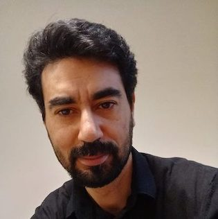

| Akram Idani |  |
Habilitation à Diriger des Recherches
Date de soutenance : le 26 Mai 2023 à 9h30
Lieu : Bâtiment IMAG (Me contacter pour assister à distance et avoir le lien zoom Cet e-mail est protégé contre les robots collecteurs de mails, votre navigateur doit accepter le Javascript pour le voir )
Titre : Formal Model Driven Engineering (FMDE)
Document : [pdf]
Slides : [pdf]
Dossier administratif : [pdf]CV court [PDF]CV court [PDF]
Publications : [dblp] [hal]
Résumé :
My research works are dedicated to the integration of two well known paradigms: Formal Methods (FM) and Model-Driven Engineering (MDE). I call this integration Formal MDE (FMDE). In fact, several works have been already done in order to strengthen the MDE paradigm with formal reasoning, and therefore make it more viable as far as safety and security concerns have to be addressed. When taken separately, these works provide a partial coverage of MDE, but when combined they can address a wide range of models and languages. During the last decade, I investigated two directions in which the FMDE paradigm proved its value: (i) Model-Driven Security (MDS), and (ii) Domain-Specific Languages (DSLs). Under the MDE umbrella, both the MDS and DSL communities advocate for the use of models throughout the development process, providing solutions to the validation problem (`do the right system'). Nonetheless, the verification problem (`do the system right') is still a major challenge, perhaps because formal reasoning (i.e. model-checking and/or theorem proving) was not apart of the MDE initiative. To be pragmatic my contributions build on well-established notations: mainly UML and B, and - at a smaller scale - BPMN, CSP, Z and Petri-Nets. Besides, the obtained results can be inspiring and, in my opinion, should be extended with other (semi-)formal languages, which would confer to FMDE a broader spectrum. The talk summarizes for every research direction (respectively MDS and DSLs) the challenges that guided my works, and gives an overview of my contributions and publications in the field.
Rapporteurs :
- Catherine Dubois (PR. ENSIIE, Evry)
- Pierre-Yves Schobbens (PR. Université de Namur)
- Virginie Wiels (DR. ONERA, Toulouse)
Examinateurs :
- Sophie Dupuy-Chessa (PR. UGA)
- Régine Laleau (PR. Université Paris-Est Créteil)
- Michael Leuschel (PR. Université de Düsseldorf)
|  |